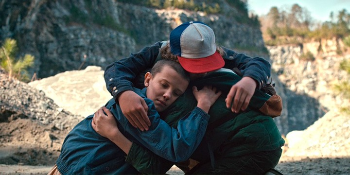
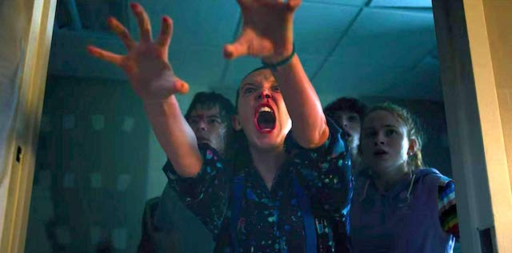
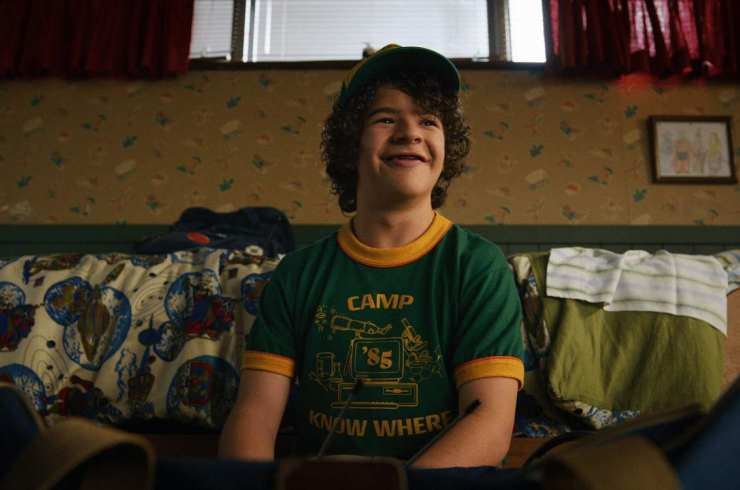

InfoSeries
InfoSeries
Info-Series, La mejor Info De Tus Series
Capturas de Stranger Things



Tabla de informacion de temporadas
| Temporada | Episodios | Primera Emisión |
|---|
| 1 | 8 | 15 de julio de 2016 |
| 2 | 9 | 27 de octubre de 2017 |
| 3 | 8 | 4 de julio de 2019 |
Trailer
Links para ver Online
Opcion 1
Opcion 2